El tramo de la calle principal del barrio entre Meridiana y Aragó será peatonal en el año 2001.
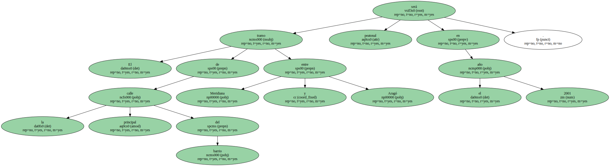La nueva zona de tiendas se suma a la oferta ya existente en Rogent , Sèquia Comtal y Cabanyal.
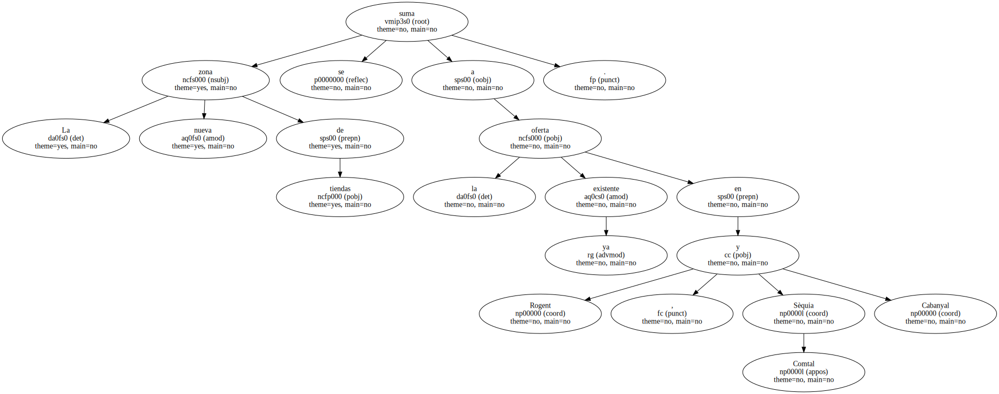El Ayuntamiento de Barcelona dará un nuevo impulso al eje comercial del Clot con la transformación en peatonal del tramo de la calle del mismo nombre comprendido entre Aragó y la avenida de la Meridiana.
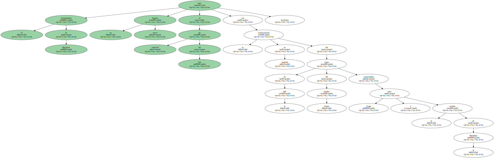La calle del Clot se incorpora , de este modo , a la zona peatonal ya existente de las calles de Rogent , Sèquia Comtal , Cabanyal y las plazas del Mercat y Font i Sagué.
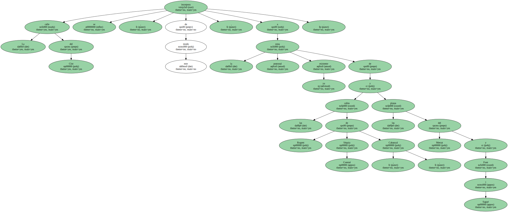En total , este gran eje comercial sumará unas 430 tiendas.
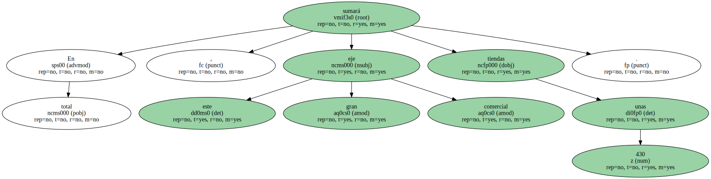El proyecto de reforma fue presentado el pasado Jueves por la noche a los comerciantes y vecinos por el concejal de Sant Martí , el socialista Francesc Narváez.
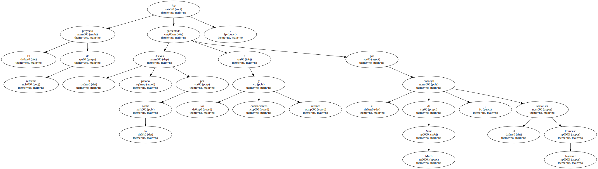Las obras , que costarán 230 millones de pesetas , empezarán en septiembre y tienen una duración prevista de 10 meses.

Mientras duren los trabajos , los comerciantes afectados disfrutarán de una rebaja del 30% en el impuesto de actividades económicas ( IAE ).
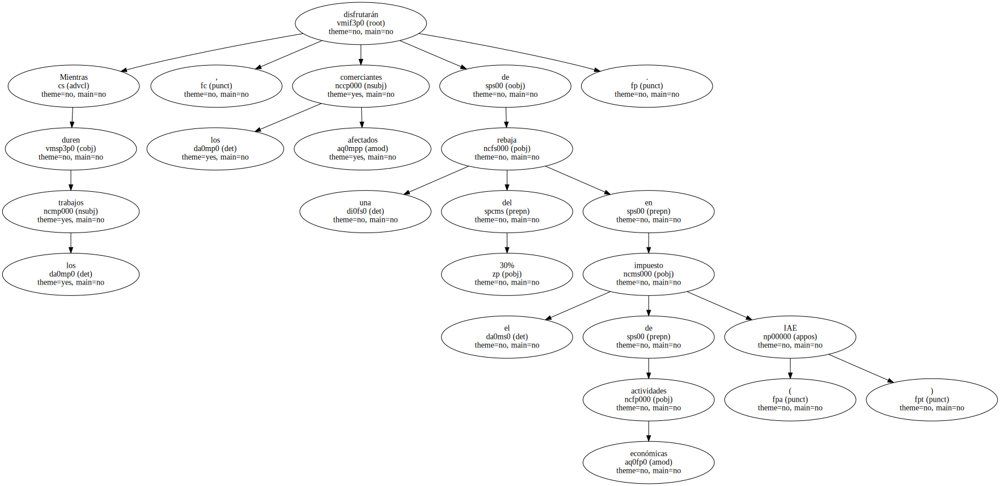Rambla sin obstáculos.
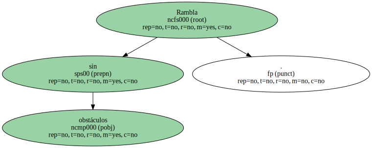Narváez espera que la peatonalización revitalizará una calle con tramos de acera de distintas anchuras e incómodos para el tránsito de viandantes.
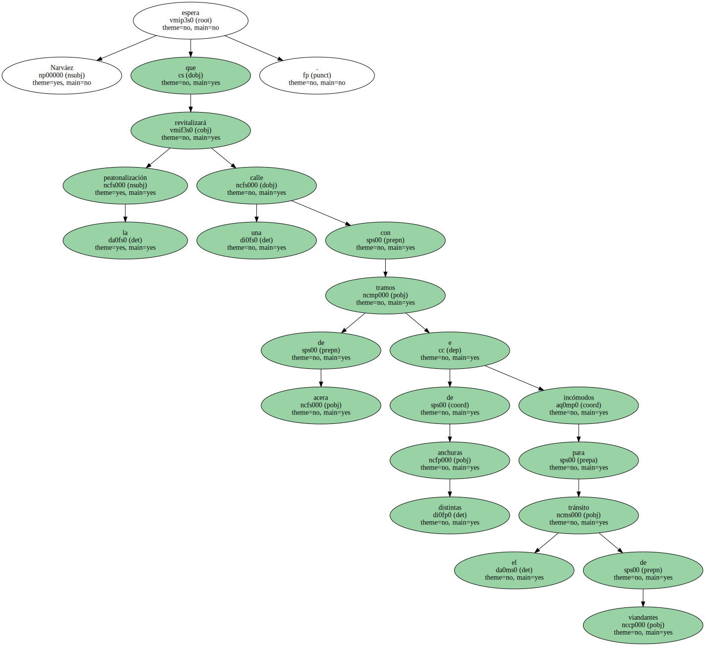La calle del Clot será la continuación transversal del eje comercial de Rogent , Sèquia Comtal y Cabanyal.

El ayuntamiento también tiene previsto enlazar las ramblas de Aragó y Guipúscoa , con el fin de atraer clientes a este eje comercial.
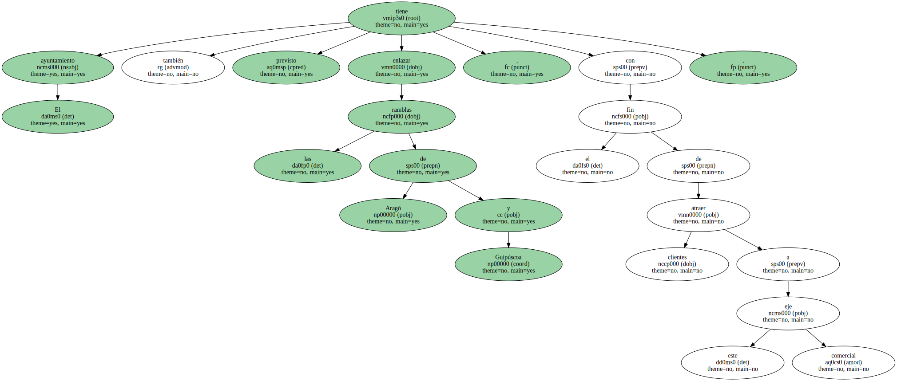Esta obra , presupuestada en 60 millones , eliminará también los obstáculos que actualmente impiden que la rambla de Aragó sea continua.
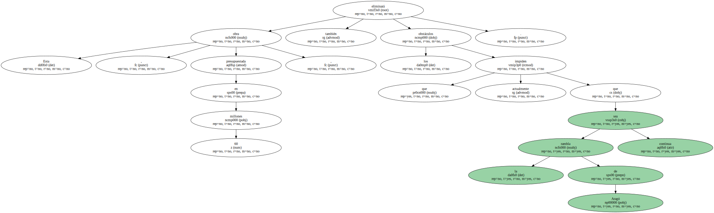" Estas actuaciones demuestran que Barcelona apuesta por el comercio de barrio " , afirma Narváez.

El acceso a los vehículos se impedirá mediante pilones automáticos que permitirán el tráfico rodado en algunas horas y el paso a vecinos y usuarios de los párkings.
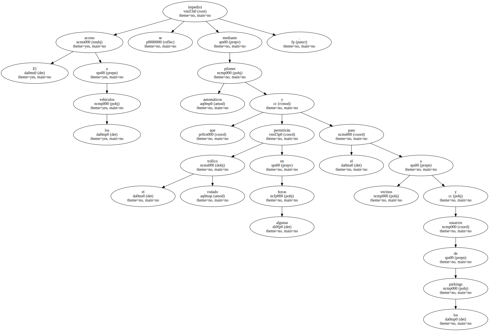Entre la Meridiana y la calle del Coronel Sanfeliu habrá dos carriles reservados para la circulación - - en las circunstancias en que esté permitida - - y la carga y descarga.
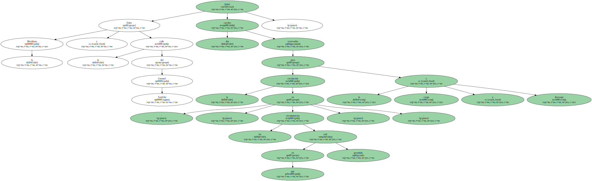En el resto de la calle se reservará un solo carril.
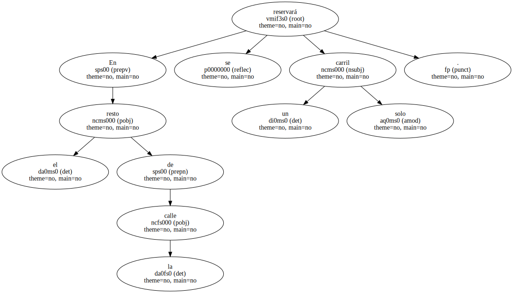Durante las obras , los comerciantes y propietarios de fincas que lo deseen podrán acogerse a una campaña de rehabilitación de fachadas que contará con bonificaciones gestionadas por la Agencia del Paisaje Urbano.

Mari Carmen Arévalo , presidenta de la Associació de Botiguers del Clot , muestra su satisfacción por la próxima reforma de la calle que pondrá fin a la actual imagen degradada.
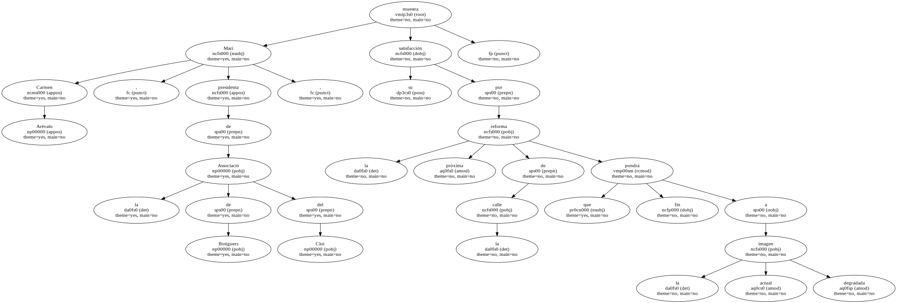" Lo estamos reclamando desde hace 15 años " , asegura.
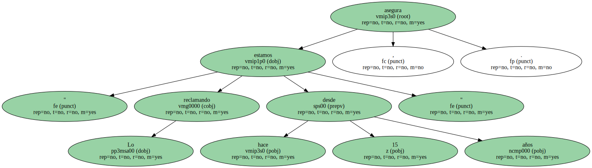Los comerciantes de la calle muestran su desacuerdo con " una peatonalización total ".
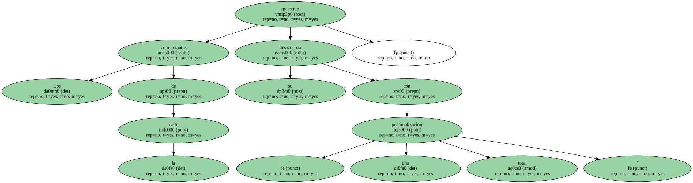" Nosotros pedimos aceras anchas , y desde el ayuntamiento siempre nos habían hablado de semipeatonalización " , añade Arévalo , que aboga por que a determinadas horas se permita la circulación bajando los pilones.
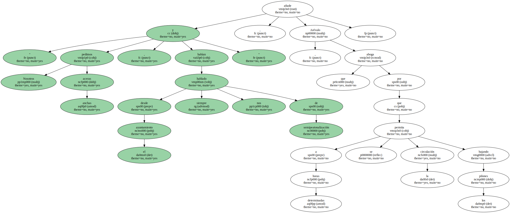Junto con la calle del Clot , el ayuntamiento también convertirá en peatonal el pasaje de Vintró.
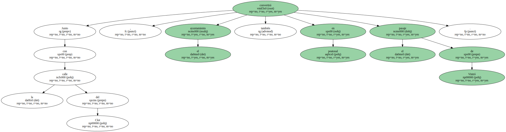" El pasaje se humanizará cerrándolo al tráfico y al estacionamiento de coches " , explica Narváez.
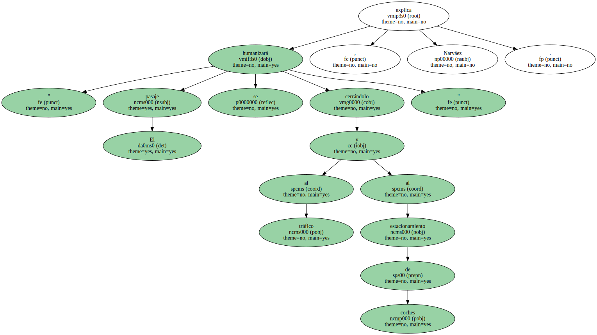" La peatonalización - - añade - - complementará el uso lúdico del pasaje " , en el que se encuentra el polideportivo Vintró , que cuenta con 3.000 abonados y una lista de espera de 2.000.
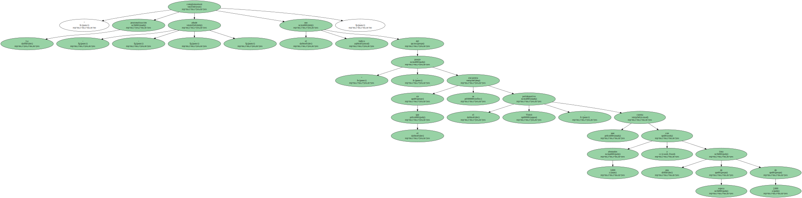